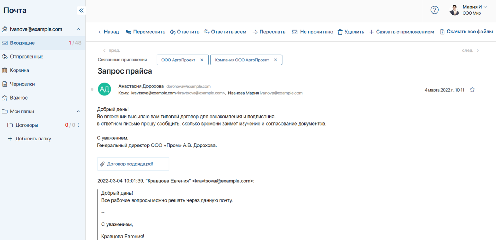
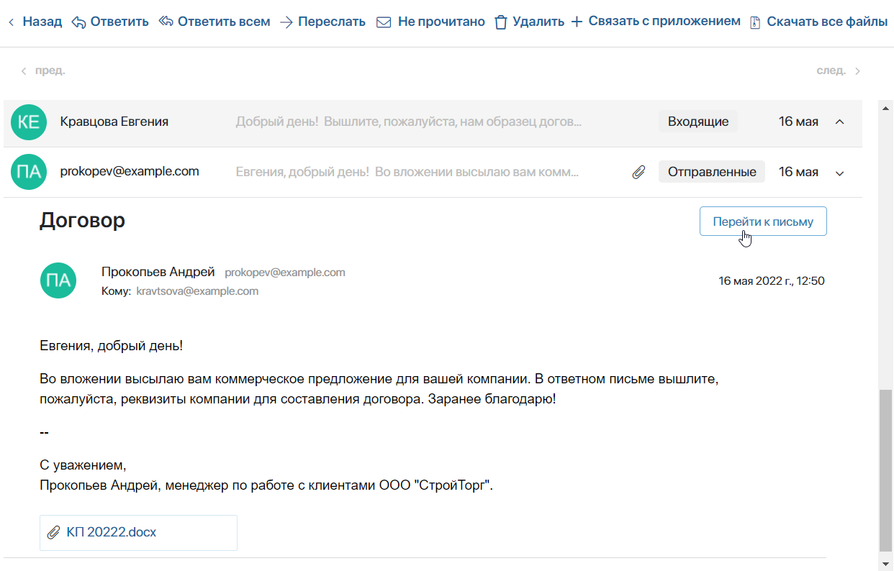
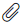
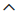
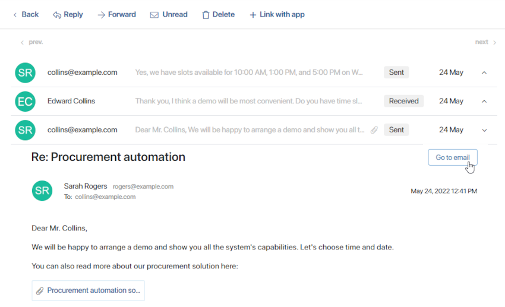

To read an email, open one of the folders in the app menu and click an email in the list. The email page will open. Here you can see the panel will all possible labels and actions you can apply to the email, the navigation buttons, the linked app items, the email body, and other emails from the same thread.

Labels and actions
On the top panel, you can see the following buttons:
- Back. Go back to the email list.
- Move. Move the message to a folder within My folders or to Trash.
- Reply. Reply only to the sender.
- Reply all. Reply to the sender and any other recipients specified in the To and Copy fields.
- Forward. Send a copy of the email to another email address. In the Compose window that opens, enter the email address you want to forward the email to and click Send. Attachments are forwarded along with emails.
- Unread. Mark the email as unread to come back to it later.
- Delete. Move the email to Trash or delete it from the email client.
- + Link with app. Select an app linked to the Email workspace and an app item in it. The current email will be shown on the app item’s view form. Users who have a permission to view items in the app will be able to see the conversation with the customer even after the address the email was sent to is disconnected from the BRIX account. By default, you can link an email with a lead or a deal. Administrators can add other apps to this list. Read more about it in the Link an app item with an email article.
- Download all files. Download the files attached to an email as an archive.
Navigation
Under the top panel, you can find the navigation buttons. Click the button in the upper left corner of the email page to open the page of the previous email in the folder. Click the button in the right corner to see the next email.
Linked app items
Above the email body, you can see the names of app items if the email is linked to them. Click the item name to open its page. You can also delete a created link.
Email body
In the center of the email page, you can see the addresses of the sender and the recipient, the date the email was sent, the email body, and the attachments.
Click on an attachment to open it and view the file. When you do it, the file is saved in the Files workspace. When you delete an email from the Trash folder, files attached to it will be deleted from the system as well.
You can mark an email as Starred. To do that, click the icon in the upper right corner of the page. The icon will become blue, and the email will be shown in the Starred folder.
Threads
Emails with the same subject can be threaded. To thread emails, click Reply on a received email’s page. All subsequent received and sent emails will be threaded. You can view a thread by opening any of the threaded emails.
Note that for Outlook, the threading feature will be available in future releases.

Under the body of an opened email you can see all previous emails on the same topic. Emails with attachments are marked with the  icon. To maximize an email and see its content, click the  icon. To open its page, click the Go to email button.

Note that when you link one of the emails in a thread with an app item, earlier emails will also be displayed on the app item’s view form. However, new received emails in a thread need to be linked with an app item individually.
Found a typo? Select it and press Ctrl+Enter to send us feedback